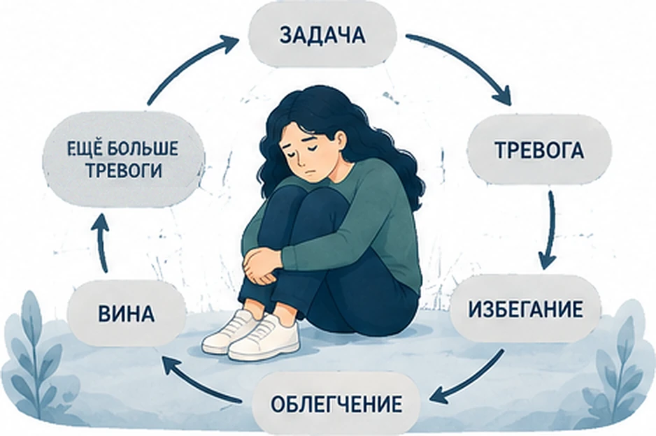
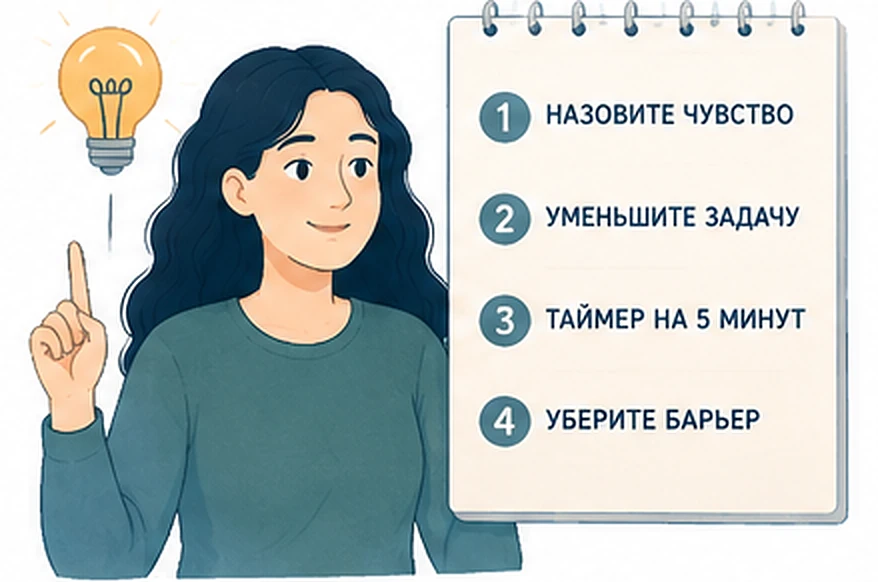

Главная → Блог → Прокрастинация
Прокрастинация: почему вы откладываете дела и 7 способов перестать
Обновлено: 21.08.2026 · 13 минут чтения
Вы знаете, что нужно сделать. Вы даже хотите это сделать. И всё равно открываете ленту, моете посуду, отвечаете на письма — что угодно, только не главную задачу. Это прокрастинация, и она не про слабую волю. Мы откладываем не дела, а неприятные чувства, которые с ними связаны: тревогу, скуку, страх не справиться. Поэтому побеждает не дисциплина, а умение уменьшить эти чувства и сделать первый шаг маленьким.
- Что такое прокрастинация и почему это не лень
- Причины прокрастинации: почему мы откладываем дела
- Цикл прокрастинации: почему он затягивает
- Что сделать прямо сейчас
- Как перестать откладывать дела: 7 способов
- Ошибки, которые усиливают прокрастинацию
- Мифы о прокрастинации
- Когда это симптом и нужен специалист
- Частые вопросы
Что такое прокрастинация и почему это не лень
Прокрастинация (её ещё называют синдромом откладывания дел) — это добровольное откладывание важного дела, несмотря на то, что вы понимаете: последствия будут хуже. Обычно мы откладываем задачи, которые считаем важными или обязательными, — даже если они нам совсем не нравятся.
Современная психология описывает прокрастинацию как сбой в регуляции эмоций, а не в управлении временем. Задача вызывает неприятное чувство — тревогу, скуку, стыд, ощущение «я не потяну». Мозг ищет способ убрать это чувство прямо сейчас, и самый быстрый способ — переключиться на что-то приятное. Облегчение приходит мгновенно, но проблема остаётся и растёт.
Отсюда главный вывод: планировщики, таймеры и списки дел полезны, но они редко решают проблему сами по себе, если в основе откладывания лежит сильная тревога. Сначала нужно разобраться с чувством, потом — с расписанием.
Прокрастинация, лень и отдых — это разные вещи
Их часто путают, и от этого много лишней вины. Разница простая:
| Что чувствуете | Что происходит с задачей | Что помогает | |
|---|---|---|---|
| Лень | Спокойное безразличие. Задача не важна | Не делаете и не переживаете | Честно спросить себя, нужна ли эта задача вообще |
| Прокрастинация | Тревога, вина, самокритика. Задача важна | Не делаете, но постоянно думаете о ней | Снизить тревогу и уменьшить первый шаг |
| Отдых | Спокойствие, восстановление сил | Отложена осознанно, на понятный срок | Ничего — это здоровая пауза |
Если после «безделья» вам плохо и вы себя ругаете — это прокрастинация. Если хорошо и вы восстановились — это был отдых, и корить себя не за что.
Причины прокрастинации: почему мы откладываем дела
За откладыванием почти всегда стоит конкретное чувство. Найдите своё — от этого зависит, что вам поможет.
1. Страх неудачи
Пока вы не начали, вы не провалились. Откладывание защищает самооценку: «я не сделал, потому что не было времени» звучит безопаснее, чем «я старался и не вышло». Особенно сильно это бьёт по тем, кто привык оценивать себя результатом — об этом мы подробно писали в статье про самооценку.
2. Перфекционизм
Если приемлем только идеальный результат, начать почти невозможно: любой первый черновик будет плохим. Перфекционист откладывает не работу, а встречу с собственным несовершенством.
3. Задача слишком большая и неясная
«Написать диплом», «разобраться с налогами», «найти новую работу» — это не задачи, а направления. Мозг не понимает, с чего начать, и честно отказывается. Ощущение неясности само по себе неприятно, и от него хочется уйти.
4. Скука и отсутствие смысла
Монотонные задачи без видимого результата вызывают почти физическое сопротивление. Здесь дело не в страхе, а в том, что нечем подпитать внимание.
5. Усталость и выгорание
Иногда «не могу начать» означает буквально «нет ресурса». Когда вы истощены, любое усилие ощущается как неподъёмное. Если это состояние длится месяцами и работа стала безразличной, стоит прочитать про эмоциональное выгорание — тайм-менеджмент тут не поможет.
6. Ожидание «правильного настроя»
Распространённая ловушка: «начну, когда будет вдохновение». Но мотивация — это чаще следствие действия, а не его причина. Многие замечают, что начать гораздо труднее, чем продолжать: после первых минут работы становится легче.
Есть и устойчивая индивидуальная составляющая. Из пяти черт «Большой пятёрки» с прокрастинацией сильнее всего связана добросовестность: чем она ниже, тем меньше внутренних опор для того, чтобы начать без внешнего срока. Это не приговор и не оправдание — просто человеку с низкой добросовестностью нужны внешние подпорки там, где другой обходится намерением. Посмотреть, где вы на этой шкале, можно в тесте на тип личности.
Цикл прокрастинации: почему он затягивает
Прокрастинация самоподдерживается, потому что каждое откладывание немедленно вознаграждается облегчением. Это классическая петля привычки, и разорвать её силой воли трудно.

Круг выглядит так:
- Задача → вы вспоминаете о ней.
- Дискомфорт → появляется тревога, скука или сомнение в себе.
- Избегание → вы переключаетесь на соцсети, уборку, мелкие дела.
- Облегчение → неприятное чувство уходит. Мозг запоминает: избегание работает.
- Вина и самокритика → «я безнадёжен, опять ничего не сделал».
- Ещё больше тревоги → задача теперь связана не только со страхом, но и со стыдом. Подойти к ней сложнее, чем вчера.
Именно поэтому самобичевание не помогает: оно добавляет топлива в тот самый дискомфорт, от которого вы бежите. Некоторые исследования показывают обратное: в работе Уола, Пычила и Беннетт (2010) студенты, которые простили себе откладывание перед первым экзаменом, меньше прокрастинировали при подготовке ко второму.
Что сделать прямо сейчас
Если задача висит над вами прямо сегодня, вот что можно сделать за ближайшие пять минут.

- Назовите чувство. Спросите себя: чего я избегаю на самом деле? Страшно провалиться? Скучно? Непонятно, с чего начать? Одно точное слово уже снижает напряжение.
- Уменьшите задачу до смешного. Не «написать отчёт», а «открыть файл и написать заголовок». Первый шаг должен быть таким маленьким, чтобы отказаться было глупо.
- Поставьте таймер на 5 минут. Договоритесь: работаю 5 минут и имею полное право бросить. Почти всегда после старта вы продолжаете — потому что тревога падает именно в момент начала.
- Уберите один барьер. Телефон в другую комнату, вкладки закрыть, нужный документ — открыть заранее. Каждое лишнее действие перед стартом стоит вам сил.
Не получается понять, что именно вас останавливает? Разберите это в разговоре с ИИ-психологом — тепло, анонимно, без осуждения.
Как перестать откладывать дела: 7 способов
Это приёмы на каждый день. Не нужно внедрять все — возьмите два-три, которые отзываются вашей причине из списка выше.
-
Правило двух минут (по Дэвиду Аллену).
Если дело занимает меньше двух минут — сделайте его сразу, не вносите в списки. Оплатить штраф, ответить на письмо, записаться к врачу: такие задачи копятся и создают фоновое чувство долга, хотя каждая решается за минуту.
-
Правило двухминутного старта.
Это другое правило, и путать их не стоит. С большой задачей договоритесь не о результате, а о входе: открыть документ, найти папку, набросать план из трёх пунктов. Диплом не пишется за две минуты, но «открыть файл и написать заголовок» — вполне.
Цель первого шага — не результат, а вход в работу -
Дробите до конкретного действия.
Плохая формулировка задачи — главный генератор прокрастинации. «Разобраться с налогами» превращается в «найти логин от личного кабинета», а «сходить к врачу» — в «открыть сайт поликлиники». Правило простое: если, прочитав пункт, вы не знаете, что именно делать руками в ближайшую минуту, задача сформулирована плохо.
-
Разрешите себе плохой черновик.
Перфекционизм лечится сменой цели: не «сделать хорошо», а «сделать плохо и потом починить». Первый вариант никто не увидит. Отредактировать существующий текст всегда легче, чем создать идеальный из пустоты.
-
Работайте интервалами.
25 минут работы, 5 минут перерыва (техника Помодоро). Конечное время делает задачу переносимой: вы обещаете себе не «весь день страданий», а один короткий отрезок. Для скучных задач вроде той самой налоговой декларации это работает лучше всего.
-
Сделайте старт неизбежным.
Договоритесь с коллегой созвониться и работать вместе в тишине. Скажите близкому, что покажете результат в пятницу. Публичное обещание и чужое присутствие поднимают цену откладывания — это один из наиболее действенных способов заставить себя работать, когда внутренней мотивации не хватает.
-
Простите себе прошлые срывы.
Самый недооценённый приём в борьбе с прокрастинацией. Пока вы называете себя лентяем, задача остаётся склеена со стыдом и виной, и подойти к ней всё труднее. Скажите себе то, что сказали бы другу: «да, я откладывал, это было тяжело, и я могу начать сейчас». Если самокритика в голове звучит громко и не выключается, помогут техники из статьи про навязчивые мысли.
Прощение себе снижает стыд — и следующий подход к задаче даётся легче
Ошибки, которые усиливают прокрастинацию
- Ждать мотивации. Она приходит после начала работы, а не до. Ждать её — значит не начать никогда.
- Пугать себя дедлайном. Страх иногда запускает рывок в последнюю ночь, но платой становится хронический стресс и качество работы. И с каждым разом эта доза страха должна быть больше.
- Строить идеальный план вместо работы. Переписывание списков и настройка приложений ощущаются как продуктивность, но это то же избегание, только с чистой совестью.
- Ругать себя. Самокритика повышает тревогу, тревога повышает откладывание. Круг замыкается.
- Обещать себе «сделать всё завтра». Завтрашний вы будет с тем же уровнем сил и той же тревогой. Лучше сделать сегодня 15 минут, чем запланировать на завтра восемь часов.
- Считать, что все справляются, а вы один такой. Это типичное искажение, близкое к синдрому самозванца: чужую внутреннюю борьбу вы не видите, а свою знаете в подробностях.
Мифы о прокрастинации
Вокруг откладывания дел накопилось много вредных убеждений. Разберём четыре самых частых.
Миф 1. Прокрастинируют только ленивые
Наоборот: откладывают чаще всего люди, которым не всё равно. Лентяю задача безразлична, а прокрастинатор переживает, корит себя и всё равно не может начать. Среди прокрастинаторов много ответственных перфекционистов.
Миф 2. Всё дело в силе воли
Сила воли — исчерпаемый ресурс, и опираться только на неё не выйдет. Если задача связана с тревогой, воля будет уходить на борьбу с чувствами, а не на работу. Гораздо надёжнее убрать барьеры и уменьшить первый шаг.
Миф 3. Дедлайн всегда помогает
Жёсткий срок иногда запускает рывок в последнюю ночь, но цена — стресс, недосып и просевшее качество. К тому же с каждым разом доза страха нужна всё больше, а удовольствие от работы уходит.
Миф 4. Прокрастинация — просто плохая привычка
Это не привычка, а способ справляться с неприятными эмоциями. Поэтому она не «отучается» повторением правильных действий: работать нужно с тем чувством, которое стоит за откладыванием.
Когда это симптом и нужен специалист
Откладывать дела время от времени — нормально. Но иногда прокрастинация перестаёт быть привычкой и становится частью более серьёзного состояния. Стоит обратиться к психологу или врачу, если:
- вы не можете начать важные дела месяцами, и это уже стоит вам работы, учёбы или отношений;
- откладывание сопровождается постоянной тревогой, бессонницей, ощущением бессилия;
- пропали радость и интерес к тому, что раньше нравилось;
- вам трудно удерживать внимание на любой задаче дольше нескольких минут, и так было всегда;
- появляются мысли о том, что не хочется жить.
Стойкая прокрастинация бывает спутником депрессии, тревожных расстройств, СДВГ и выгорания. В этих случаях одних техник продуктивности обычно недостаточно: нужна работа с основной причиной. Хорошая новость в том, что все эти состояния лечатся, и обращение за помощью — это не слабость, а самый рациональный первый шаг.
Частые вопросы
Прокрастинация — это лень?
Нет. При лени человеку всё равно и он не хочет тратить силы. При прокрастинации дело важно — вы хотите его сделать и мучаетесь от того, что не делаете. Откладывание — это способ убежать от неприятных чувств рядом с задачей: страха, скуки, неопределённости. Поэтому призывы «просто соберись» не работают, а работа с эмоциями — да.
Почему я прокрастинирую, даже когда дело важное?
Именно потому, что оно важное. Чем выше цена ошибки, тем сильнее тревога рядом с задачей, и тем притягательнее её отложить. Мозг выбирает не «лучший результат», а быстрое облегчение прямо сейчас. Снизьте ставки: договоритесь с собой о черновике на 15 минут вместо идеального результата.
Как заставить себя начать, если совсем нет сил?
Не заставляйте, а уменьшайте задачу, пока она не станет смешной: открыть документ, написать одно предложение, разложить бумаги на столе. Договоритесь работать ровно 5 минут и разрешите себе бросить. Обычно после старта продолжать легче, потому что тревога падает именно в момент начала.
Прокрастинация — это признак СДВГ или депрессии?
Сама по себе — нет, откладывать дела время от времени нормально. Но если вы не можете начать месяцами, теряете работу или учёбу, не чувствуете радости и сил, есть смысл обратиться к специалисту. Стойкая прокрастинация бывает частью СДВГ, депрессии, тревожных расстройств и выгорания, и тогда помогает лечение основной причины, а не тайм-менеджмент.
Связана ли прокрастинация с чертами характера?
Отчасти да. Из пяти черт «Большой пятёрки» с прокрастинацией устойчиво связана добросовестность: чем она ниже, тем меньше внутренних опор для того, чтобы начать дело без внешнего срока. Это не приговор — просто человеку с низкой добросовестностью нужны внешние подпорки там, где другой обходится намерением: списки, напоминания, договорённости с кем-то ещё.
Помогает ли жёсткая самодисциплина и наказание себя?
Обычно нет, и это самая частая ошибка. Ругая себя за откладывание, вы добавляете к задаче ещё и стыд — а значит, подходить к ней становится ещё неприятнее, и круг замыкается. Исследования прокрастинации показывают обратное: люди, которые сумели простить себе предыдущее откладывание, начинали следующее дело быстрее. Работает не строгость, а снижение цены подхода к задаче.
Материал подготовлен командой AI Therapist и основан на доказательных подходах — когнитивно-поведенческой терапии (КПТ), ACT и практиках самосострадания. Статья носит просветительский характер и не заменяет консультацию специалиста.
Источники:
1. Американская психологическая ассоциация (APA) — почему мы прокрастинируем и что с этим делать (с участием Фуксии Сируа, исследователя прокрастинации).
2. Ассоциация психологических наук (APS) — наука о прокрастинации (обзор работ Джозефа Феррари и Тимоти Пычила).
3. Wohl M., Pychyl T., Bennett S. (2010) — самопрощение снижает будущую прокрастинацию, Personality and Individual Differences.
Кто отвечает за содержание сайта и по каким правилам мы готовим материалы — на странице о проекте.